수능(국어영역) (2015-06-04 기출문제)
1. [A]와 [B]에 대한 분석으로 가장 적절한 것은?(1번 공통지문 문제)
- [A]에서는 ‘학생 1’과 ‘학생 2’가 서로의 요구를 수용함으로써 의견의 일치점을 찾았다.
- [B]에서 ‘학생 1’은 ‘학생 2’와의 의견 차이를 좁히기 위해 새로운 대안을 제시하였다.
- [A]에서는 ‘연습 시간 축소’의 문제를, [B]에서는 ‘연습 장소 이동’의 문제를 해결하였다.
- [A]에서는 대화 참여자 간의 공동의 문제를, [B]에서는 공동이 아닌 ‘학생 1’ 개인과 관련된 문제를 중심 화제로 대화하였다.
- [A]와 [B]에서는 각각 제시된 안들을 ‘학생 1’이 종합하였다.
(정답률: 알수없음)

2. 다음은 어느 학생이 [A]를 들으며 메모한 내용이다. ⓐ～ⓔ에서 드러나는 학생의 듣기 과정에 대한 설명으로 적절하지 않은 것은? [3점](3번 공통지문 문제)
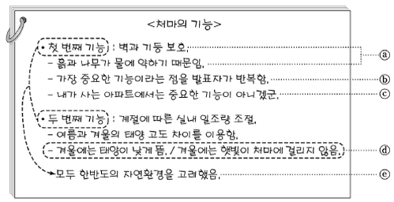
- ⓐ로 보아, 정보들 사이의 관계를 파악하며 들었음을 알 수 있다.
- ⓑ로 보아, 발표자가 강조하는 내용이 무엇인지 파악하며 들었음을 알 수 있다.
- ⓒ로 보아, 발표 내용을 자기 경험과 관련지으며 들었음을 알 수 있다.
- ⓓ로 보아, 제시된 정보를 사실과 의견으로 구분하며 들었음을 알 수 있다.
- ⓔ로 보아, 정보들 사이의 공통점이 무엇인지 비교하며 들었음을 알 수 있다.
(정답률: 알수없음)
3. 다음은 ‘영우’의 발표를 들은 후 청중이 보인 반응이다. 발표를 고려하여 청중의 반응을 분석한 것으로 가장 적절한 것은?(3번 공통지문 문제)
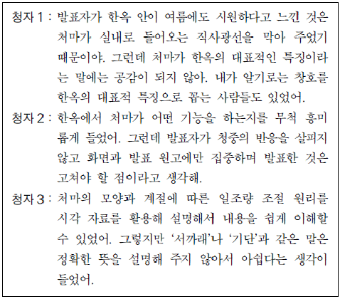
- 청자 1의 반응으로 볼 때, 발표를 듣고 처마가 한옥의 가장 큰 특징이라는 발표자의 생각에 공감하게 되었군.
- 청자 1의 반응으로 볼 때, 발표 내용과 달리 여름철에 한옥의 실내가 시원하게 느껴지는 이유를 창호와 관련지어 이해했군.
- 청자 2의 반응으로 볼 때, 선정된 발표 주제에 대해서 부정적으로 인식하고 있군.
- 청자 2의 반응으로 볼 때, 발표자가 청중과 상호 작용한 것을 긍정적으로 평가하고 있군.
- 청자 3의 반응으로 볼 때, 매체 활용의 효과에 대해서는 긍정적으로 평가하면서도 용어 설명이 부족했다고 생각하고 있군.
(정답률: 알수없음)
4. ⓐ～ⓔ를 고쳐 쓰기 위한 방안으로 적절하지 않은 것은?(6번 공통지문 문제)
- ⓐ : 문단 구성을 자연스럽게 하기 위해 이 부분에서 문단을 나누는 것이 좋겠어.
- ⓑ : 접속어의 사용이 부적절하므로 ‘그래서’로 고치는 것이 좋겠어.
- ⓒ : 글의 흐름을 고려하여 바로 앞의 문장과 순서를 바꾸는 것이 좋겠어.
- ⓓ : 어휘의 사용이 적절하지 않으므로 ‘사양하시며’로 바꾸는 것이 좋겠어.
- ⓔ : 글의 통일성을 저해하므로 삭제하는 것이 좋겠어.
(정답률: 알수없음)
5. ㉠에 들어갈 내용으로 가장 적절한 것은?(8번 공통지문 문제)
- 중심 소재를 고려하여 ‘텔레비전 요리 프로그램이 높은 시청률을 기록하며’를 ‘요리 관련 서적이 높은 판매량을 기록하며’로 수정할 필요가 있어.
- 중심 소재를 고려하여 ‘대중매체에 대한 의존성이 높아졌음’을 ‘텔레비전 요리 프로그램에 대한 관심이 높아졌음’으로 수정할 필요가 있어.
- 중심 소재를 고려하여 ‘방송가에서는 다양한 요리 프로그램’을 ‘방송가에서는 다양한 체험 프로그램’으로 수정할 필요가 있어.
- 글의 주제를 고려하여 ‘요리 프로그램이 인기를 끄는 이유’를 ‘요리 프로그램의 구성 방식’으로 수정할 필요가 있어.
- 글의 주제를 고려하여 ‘그에 따라 발생하는 부정적 영향’을 ‘그에 따라 발생하는 긍정적 영향’으로 수정할 필요가 있어.
(정답률: 알수없음)
6. ㉡을 고려할 때, [A]에 들어갈 내용으로 가장 적절한 것은? [3점](8번 공통지문 문제)
- 이는 요리 프로그램이 시청자들의 다양한 요구를 수용하며 공감을 얻는 것에 성공한 결과이다.
- 그러나 요리 프로그램의 시청률을 높이기 위해 선정적이고 자극적인 정보만 제시하는 현실이 안타깝다.
- 그러나 요리 프로그램이 점차 상업화되고 다른 성격의 방송 프로그램까지도 요리 프로그램화 되고 있는 사실은 부정적이다.
- 이 외에도 1인 가구의 증가로 인하여 요리 프로그램을 통해 위안을 얻는 사람들이 늘고 있는 점도 인기 요인의 하나이다.
- 나아가 요리 프로그램은 요리를 통해 인간의 소비 욕구를 자극한다는 점에서 관련된 요리 산업의 확대에도 영향을 준다.
(정답률: 알수없음)
7. <보기>의 [가]에 들어갈 말로 가장 적절한 것은?
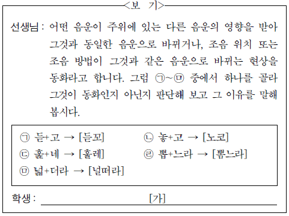
- ㉠은 동화입니다. 왜냐하면 ‘ㄱ’이 ‘ㄷ’의 영향을 받아 ‘ㄱ’과 같은 위치에서 소리 나는 ‘ㄲ’으로 바뀌기 때문입니다.
- ㉡은 동화입니다. 왜냐하면 ‘ㅎ’이 ‘ㄱ’의 영향을 받아 ‘ㅎ’과 거센소리라는 점이 같은 ‘ㅋ’으로 바뀌기 때문입니다.
- ㉢은 동화입니다. 왜냐하면 ‘ㄴ’이 ‘ㅌ’의 영향을 받아 ‘ㅌ’과 같은 위치에서 소리 나는 ‘ㄹ’로 바뀌기 때문입니다.
- ㉣은 동화입니다. 왜냐하면 ‘ㅂ’이 ‘ㄴ’의 영향을 받아 ‘ㄴ’과 콧소리라는 점이 같은 ‘ㅁ’으로 바뀌기 때문입니다.
- ㉤은 동화입니다. 왜냐하면 ‘ㅂ’이 ‘ㄷ’의 영향을 받아 ‘ㄷ’과 동일한 소리인 ‘ㄷ’으로 바뀌기 때문입니다.
(정답률: 알수없음)
8. <보기>에 제시된 국어사전 정보를 완성한다고 할 때, ㉠～㉤에 대한 설명으로 적절하지 않은 것은? [3점]
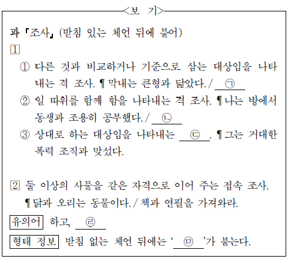
- ㉠에는 ‘그는 낯선 사람과 잘 사귄다.’를 넣을 수 있다.
- ㉡에는 ‘그는 형님과 고향에 다녀왔다.’를 넣을 수 있다.
- ㉢에 들어갈 말은 ‘격 조사’이다.
- ㉣에 ‘이랑’이 들어갈 수 있다.
- ㉤에 들어갈 말은 ‘와’이다.
(정답률: 알수없음)
9. <보기>의 ㉠, ㉡에 해당하는 예로 적절하지 않은 것은?
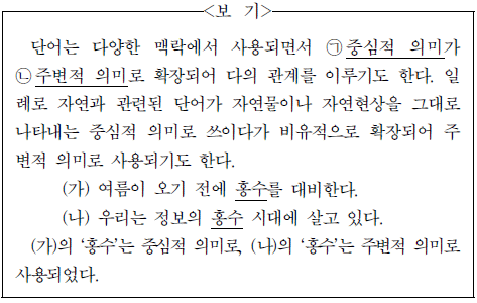
- ㉠ : 천체 망원경으로 밤하늘의 별을 관찰했다.
㉡ : 어제 물리학계의 큰 별이 졌다. - ㉠ : 천둥과 번개를 동반한 비가 내렸다.
㉡ : 그는 도망가는 데만큼은 정말 번개야. - ㉠ : 그는 자신의 뿌리를 찾고자 노력한다.
㉡ : 잡초가 다시 자라지 않도록 뿌리를 뽑았다. - ㉠ : 일출을 기다리는 우리 앞에 붉은 태양이 떠올랐다.
㉡ : 그녀는 그가 자기 마음의 태양이라고 말했다. - ㉠ : 들판에는 풀잎마다 이슬이 맺혔다.
㉡ : 그녀의 두 눈에 맺힌 이슬이 뜨겁게 흘러내렸다.
(정답률: 알수없음)
10. <보기 1>의 ㉠～㉣ 중 <보기 2>와 같이 문장을 수정하는 데에 반영된 것만을 있는 대로 고른 것은?
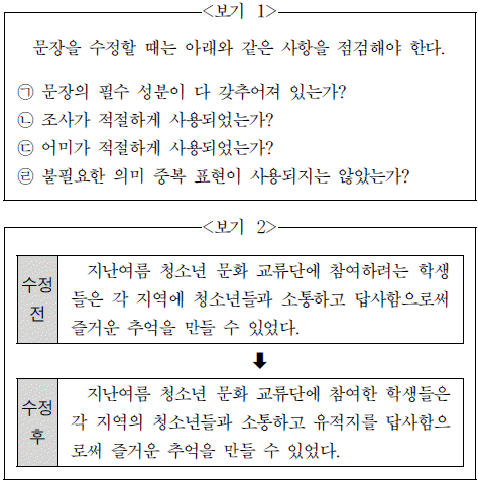
- ㉠, ㉢
- ㉠, ㉣
- ㉡, ㉣
- ㉠, ㉡, ㉢
- ㉡, ㉢, ㉣
(정답률: 알수없음)
11. 담화 상황을 고려할 때, <보기>의 ㉠～㉤에 대한 이해로 적절하지 않은 것은?
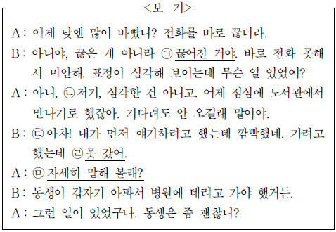
- ㉠ : 피동 표현을 사용하여 상황이 B의 의지와 무관하게 일어났음을 나타낸다.
- ㉡ : 지시 대명사를 사용하여 B로부터 멀리 떨어져 있는 곳으로 관심을 유도한다.
- ㉢ : 감탄사를 사용하여 A의 발화를 듣고 어떤 것을 갑자기 깨달았음을 나타낸다.
- ㉣ : 부정 부사 ‘못’을 사용하여 B에게 일어난 상황이 불가피 했음을 나타낸다.
- ㉤ : 의문 표현을 사용하여 B에게 일의 까닭을 상세히 말해 달라고 요청한다.
(정답률: 알수없음)
12. ㉠～㉢을 사용해 정상적인 ‘지문 영상’을 얻었다고 할 때, 각 센서에 감지되는 물리량에 대한 설명으로 가장 적절한 것은?(16번 공통지문 문제)
- ㉠에서는, 융선의 위치에서 반사되어 센서에 도달한 빛의 세기가 골의 위치에서 반사되어 센서에 도달한 빛의 세기보다 강하겠군.
- ㉡에서는, 융선에 대응하는 센서의 전하량이 골에 대응하는 센서의 전하량과 같겠군.
- ㉡에서는, 융선에 대응하는 센서의 전하량이 골에 대응하는 센서의 전하량보다 적겠군.
- ㉢에서는, 융선에 대응하는 센서의 온도가 골에 대응하는 센서의 온도와 같겠군.
- ㉢에서는, 융선에 대응하는 센서의 온도가 골에 대응하는 센서의 온도보다 낮겠군.
(정답률: 알수없음)
13. ⓐ에 따라 <보기>의 정보를 활용한 홍채 인식 시스템을 설계한다고 할 때, 단계별 고려 사항으로 적절하지 않은 것은? [3점](16번 공통지문 문제)
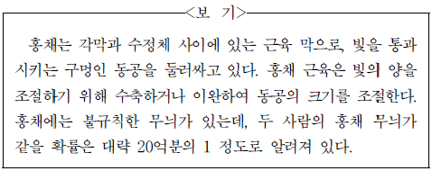
- [생체 정보 수집] 홍채의 바깥에 각막이 있으므로 홍채 정보를 수집할 때에는 지문 입력 장치와 달리, 홍채 입력 장치와 홍채가 직접 닿지 않게 하는 방식을 고려해야겠군.
- [전처리] 생체 정보 수집 단계에서 얻은 영상에서 홍채의 불규칙한 무늬가 나타난 부분만을 분리하는 과정이 필요하겠군.
- [전처리] 홍채의 불규칙한 무늬가 선명하게 드러날 수 있도록 생체 정보 수집 단계에서 얻은 영상을 보정해야겠군.
- [특징 데이터 추출] 홍채 근육에 의해 동공의 크기가 달라진다는 점을 고려하여 홍채에서 동공이 차지하는 비율을 특징 데이터로 추출해야 하겠군.
- [정합] 등록된 홍채의 특징 데이터와 조회하려는 홍채의 특징 데이터 사이의 유사도를 판정하는 단계이므로 유사도의 기준치가 정해져 있어야 하겠군.
(정답률: 알수없음)
14. 윗글에 대한 이해로 적절한 것은? [3점](19번 공통지문 문제)
- 라듐이 발견됨으로써 러더퍼드는 원자핵을 발견하게 된 실험을 할 수 있었다.
- 질소 충돌 실험에서 양성자가 발견됨으로써 유카와 히데키의 가설이 입증되었다.
- 채드윅은 양성자가 핵 안에서 흩어지지 않는 이유를 설명하는 가설을 제안했다.
- 원자모형은 19세기 말에 전자가 발견됨으로써 ‘태양계 모형’ 에서 ‘건포도빵 모형’으로 수정되었다.
- 알파 입자가 금박의 일부분에서 튕겨 나간다는 사실을 통해 양전기가 원자 전체에 퍼져 있음이 입증되었다.
(정답률: 알수없음)
15. ㉠의 문맥적 의미와 가장 가까운 것은?(19번 공통지문 문제)
- 그 식물은 전국에 고른 분포를 보인다.
- 국어사전에서 적당한 단어를 골라야 한다.
- 그는 목소리를 고르며 차례를 기다리고 있다.
- 울퉁불퉁한 곳을 흙으로 메워 판판하게 골랐다.
- 날씨가 고르지 못한 환절기에 아이가 감기에 들었다.
(정답률: 알수없음)
16. 윗글에 대한 이해로 적절하지 않은 것은?(22번 공통지문 문제)
- 메타 윤리학은 규범 윤리학에서 사용하는 개념과 원칙 자체에 대해 연구한다.
- 정서주의에 따르면, 도덕적 판단은 윤리적 행위의 동기 부여와 직접 연결된다.
- 정서주의에 따르면, 과학적 진리와 마찬가지의 도덕적 진리는 존재하지 않는다.
- 도덕 실재론과 정서주의는 ‘옳음’과 ‘옳지 않음’의 의미를 이해하는 방식이 다르다.
- 도덕 실재론에 따르면, 도덕적 판단은 승인 감정에 의해 ‘옳음’의 태도를 표현한다.
(정답률: 알수없음)
17. ㉠을 이해한 것으로 가장 적절한 것은?(22번 공통지문 문제)
- 도덕적 판단의 변화에는 뚜렷한 근거가 필요 없다.
- 감정도 수시로 변하고, 도덕적 판단도 수시로 변한다.
- 도덕적 판단과 달리 감정이 바뀔 때에는 이유가 필요하다.
- 감정 없는 사람도 없고, 도덕적 판단을 하지 않는 사람도 없다.
- 감정과 달리 도덕적 판단을 바꿀 때에는 뚜렷한 근거가 필요하다.
(정답률: 알수없음)
18. 윗글을 바탕으로 <보기>를 이해한 내용으로 가장 적절한 것은? [3점](22번 공통지문 문제)
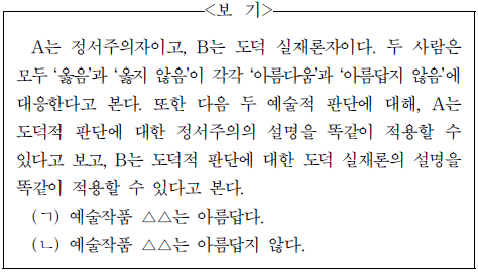
- A와 B는 모두 예술적 진리가 존재하지 않는다고 생각하겠군.
- A는 ‘아름다움’이라는 성질이 객관적으로 실재한다고 생각하겠군.
- A는 (ㄱ)과 (ㄴ) 중 하나는 ‘참’인 명제라고 생각하겠군.
- B는 (ㄱ)과 (ㄴ) 중 하나는 ‘거짓’인 명제라고 생각하겠군.
- B는 (ㄱ)과 (ㄴ)은 모두 예술작품 △△에 대한 감정과 태도를 표현한다고 생각하겠군.
(정답률: 알수없음)
19. ⓐ～ⓔ의 사전적 뜻풀이로 옳지 않은 것은?(22번 공통지문 문제)
- ⓐ : 판별하여 결정함.
- ⓑ : 규칙에 의해 일정한 한도를 정함.
- ⓒ : 서로 의견이 일치함.
- ⓓ : 의견이나 문제를 내어 놓음.
- ⓔ : 서로 반대되어 어긋남.
(정답률: 알수없음)
20. 윗글에 대한 이해로 적절하지 않은 것은?(27번 공통지문 문제)
- 과징금은 불법 행위를 행정적으로 제재하는 수단에 해당된다.
- 기업이 담합해 제품 가격을 인상한 행위는 불법 행위에 해당한다.
- 불법 행위로 인한 피해자는 손해 배상으로 구제받는 것이 가능하다.
- 하나의 불법 행위에 대해 두 가지 이상의 금전적 제재가 내려질 수 있다.
- 우리나라에서는 기업의 불법 행위를 과징금보다 벌금으로 제재하는 사례가 많다.
(정답률: 알수없음)
21. 문맥을 고려할 때 ㉠～㉤에 대한 설명으로 적절하지 않은 것은?(27번 공통지문 문제)
- ㉠은 피해자가 금전적으로 구제받는 것을 의미한다.
- ㉡은 피해자가 손해액을 초과하여 배상받는 것을 가리킨다.
- ㉢은 징벌적 손해 배상 제도를 가리킨다.
- ㉣은 행정적 제재 수단으로서의 성격을 말한다.
- ㉤은 배상금 전체에서 손해액에 해당하는 배상금을 제외한 금액을 의미한다.
(정답률: 알수없음)
22. 윗글을 바탕으로 <보기>를 이해한 내용으로 적절하지 않은 것은? [3점](27번 공통지문 문제)
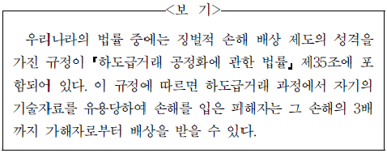
- 이 규정에 따라 피해자가 받게 되는 배상금은 국가에 귀속되겠군.
- 이 규정의 시행으로, 기술자료를 유용해 타인에게 손해를 끼치는 행위가 억제되는 효과가 생기겠군.
- 이 규정에 따라 피해자가 손해의 3배를 배상받을 경우에는 배상금에 징벌적 성격이 가미된 배상금이 포함되겠군.
- 일반적인 손해 배상 제도를 이용할 때보다 이 규정을 이용할 때에 피해자가 받을 수 있는 배상금의 최대한도가 더 커지겠군.
- 이 규정이 만들어진 것으로 볼 때, 하도급거래 과정에서 발생하는 기술자료 유용은 적발 가능성이 매우 낮은 불법 행위에 해당되겠군.
(정답률: 알수없음)
23. ㉠～㉤에 대한 이해로 적절하지 않은 것은?(31번 공통지문 문제)
- ㉠ : 밝아 오는 ‘동창’과 ‘노고지리’의 지저귐을 통해 ‘아이’가 일어나야 할 때임을 알려 주고 있다.
- ㉡ : ‘호미’를 챙기고 ‘소’를 직접 몰고 가는 모습을 통해 농사일을 하러 가는 장면을 묘사하고 있다.
- ㉢ : ‘고랑’의 풀을 ‘마주 잡아’ 걷어 내는 것을 통해 농사일을 함께 하려는 태도를 보여 주고 있다.
- ㉣ : ‘비 온 끝에 볕’이 나는 ‘화창’한 날씨를 통해 좋은 때에 일을 해야 하는 괴로움을 드러내고 있다.
- ㉤ : ‘사립문’이 ‘녹음 속’에 닫혀 있는 모습을 통해 농번기에 집이 비어 있는 상황을 묘사하고 있다.
(정답률: 알수없음)
24. (나)와 (다)를 비교하여 감상한 내용으로 적절하지 않은 것은?(31번 공통지문 문제)
- (나)에는 (다)와 달리, 특정 시기에 재배해야 하는 작물이 제시되어 있군.
- (나)에는 (다)와 달리, 농사일 중에 휴식을 즐기는 여유로움이 그려져 있군.
- (다)에는 (나)와 달리, 먹고 입는 것과 관련한 농사일이 다양하게 나타나 있군.
- (나)와 (다)의 화자는 모두 노동의 현장을 주목하고 있군.
- (나)와 (다)의 배경은 모두 농부들의 일상적인 삶을 보여 주는 공간으로 볼 수 있군.
(정답률: 알수없음)
25. 윗글의 인물에 대한 이해로 가장 적절한 것은?(34번 공통지문 문제)
- ‘점순이’는 성례를 위해 적극적으로 행동을 취하지 않는 ‘나’ 에게 불만을 표시한다.
- ‘나’는 ‘점순이’와의 갈등을 회피하기 위해서 자신의 집으로 돌아갈 것을 결심한다.
- ‘나’와 ‘장인’이 갈등을 일으키는 이유는 ‘점순이’에게 함부로 일을 시키는 ‘장인’의 태도 때문이다.
- ‘동리 사람들’에게 ‘장인’이 인심을 잃게 된 주된 이유는 ‘나’와 ‘점순이’의 혼례를 치러 주지 않았기 때문이다.
- ‘나’는 ‘동리 사람들’이 ‘장인’에게 보여 주는 태도와 상반된 입장을 보임으로써, ‘나’는 ‘장인’이 ‘동리 사람들’에게 취하는 행동을 옹호한다.
(정답률: 알수없음)
26. ㉠～㉤에 대한 설명으로 적절하지 않은 것은?(34번 공통지문 문제)
- ㉠ : 인물의 이름과 별명의 연관성을 제시하고 있다.
- ㉡ : 괄호를 제거해도 자연스러운 문장이 되도록 서술자의 진술이 이루어지고 있다.
- ㉢ : 소의 주인과 소를 동일시하여 ‘장인’에 대한 서술자의 반감을 드러내고 있다.
- ㉣ : ‘너무 빨리빨리 논다’라는 행동에 대한 ‘장인’의 평가를 첨가하고 있다.
- ㉤ : ‘점순이’가 부쩍 자란 사실을 숨겨 온 ‘장인’의 속셈을 알아내고 반가워하는 ‘나’의 태도를 제시하고 있다.
(정답률: 알수없음)
27. <보기>를 참조할 때, ⓐ～ⓔ에 대한 감상으로 적절하지 않은 것은? [3점](34번 공통지문 문제)
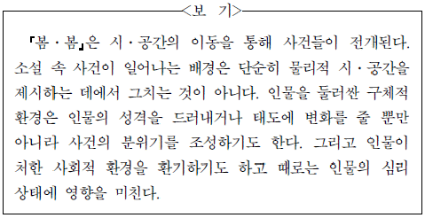
- ⓐ : 대부분의 마름들이 장인과 같이 행동하였다면, ‘가을’에 많은 소작농들은 불안감에 시달렸겠군.
- ⓑ : ‘논’은 ‘장인’의 회유에 넘어간 ‘나’가 일꾼으로서의 면모를 발휘하는 장소로군.
- ⓒ : ‘화전밭’에서 ‘나’는 생기 있는 봄의 분위기에 취해 정서적으로 반응하고 있군.
- ⓓ : ‘밭’에서 ‘나’는 ‘장인’ 때문에 생긴 울화를 ‘소’와 ‘점순이’ 에게 한껏 터트리고 있군.
- ⓔ : ‘이날’은 ‘점순이’의 평소와 다른 말과 행동을 통해 ‘나’가 ‘점순이’의 본심을 알아채는 날이겠군.
(정답률: 알수없음)
28. ㉠～㉤에 대한 이해로 적절하지 않은 것은?(38번 공통지문 문제)
- ㉠ : 홍계월과 보국이 멀리서 온 여공에게 고마움을 표하는 모습을 보여 준다.
- ㉡ : 홍계월이 병이 나자 집안사람들이 많이 놀라며 지극한 정성으로 치료하는 모습을 보여 준다.
- ㉢ : 홍계월이 부모 앞에서 울음을 터트리며 서러움을 드러내는 모습을 보여 준다.
- ㉣ : 천자가 조정에서 물러나 있는 홍계월을 다시 전쟁터로 보내야 하는지 고민하는 모습을 보여 준다.
- ㉤ : 천자가 집안일에 매달려 있는 홍계월을 오랫동안 보지 못해 그리워하는 모습을 보여 준다.
(정답률: 알수없음)
29. <보기>를 참고하여 윗글을 감상한 내용으로 적절하지 않은 것은? [3점](38번 공통지문 문제)
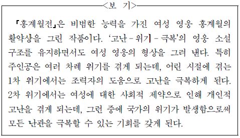
- 신하들이 나라의 위기를 해결할 인물로 홍계월을 적극 추천하는 것에서 홍계월의 뛰어난 능력을 짐작할 수 있군.
- 홍계월이 정체가 탄로 나면 나랏일을 할 수 없다고 판단한 것에서 여성의 사회적 참여에 제약이 따랐음을 짐작할 수 있군.
- 홍계월이 궁궐에서 천자에 못지않은 생활을 하여 천자의 노여움을 사게 된 것은 2차 위기의 빌미가 되었음을 알 수 있군.
- 여공이 어린 홍계월을 구하여 입신양명하게 한 것에서 주인공이 1차 위기를 조력자의 도움으로 극복했음을 확인할 수 있군.
- 홍계월이 천자의 부름을 받아 사직을 보전하라는 명을 받은 것에서 국가의 위기와 개인적 고난을 동시에 극복할 기회를 얻었다는 사실을 알 수 있군.
(정답률: 알수없음)
30. <보기>를 참고하여 (가)의 ㉠～㉢을 감상한 내용으로 가장 적절한 것은? [3점](41번 공통지문 문제)
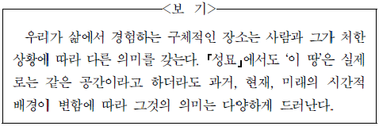
- 한곳에 머물지 않고 ‘떠도신’ 아버지의 삶을 화자가 떠올리고 있다는 점에서 ㉠은 화자에게 아버지에 대한 원망스러운 감정을 느끼게 하는 장소이다.
- 화자가 ㉠과 관련하여 ‘국경 수비대의 칼날에 비친 / 저문 압록강의 붉은 물빛’을 언급하고 있다는 점에서 화자에게 ㉠은 복원된 민족의 정체성을 깨닫게 하는 장소이다.
- ‘젊은 아버지의 추억’이 사라지고 없다는 점에서 ㉡은 화자가 세대교체를 통하여 미래지향적인 변화를 추구하는 장소임을 알 수 있다.
- 아버지가 ‘소금 장수’로 다시 태어나기를 바라는 모습을 통해 ㉢은 화자가 가업을 이어 아버지의 꿈을 실현하려는 장소임을 알 수 있다.
- ‘멀어져 가는 그 소리를 듣게’ 하라는 표현을 통해 ㉢은 화자가 자신의 바람이 현실화되기를 희망하는 장소임을 알 수 있다.
(정답률: 알수없음)
31. (나)에 대한 이해로 적절하지 않은 것은?(41번 공통지문 문제)
- ‘집 뒤안’은 화자가 툇마루에 담겨 있는 유년 시절과 단절되었음을 보여 준다.
- ‘거울’은 손때가 툇마루에 쌓여 있는 오랜 세월의 흔적을 환기한다.
- 툇마루는 ‘꾸지람’을 들은 뒤 찾아가 위안을 얻었던 화자의 경험을 환기한다.
- 툇마루를 찾아온 화자에게 외할머니가 건네 준 ‘오디 열매’는 외할머니의 사랑을 드러낸다.
- 툇마루에 비치는 ‘외할머니의 얼굴’은 화자와 외할머니 사이의 친밀감을 드러낸다.
(정답률: 알수없음)
32. <보기>를 바탕으로 윗글을 이해한 내용으로 적절하지 않은 것은?(44번 공통지문 문제)
- 남자가 여자에게 전보를 치는 행동은 현재의 무대 공간에서 인물의 대사를 통해서 제시된다.
- 하인의 등퇴장은 남자가 빌린 물건들이 하나 둘씩 없어지는 사실과 결부되어 남자의 초조함을 고조시킨다.
- 무대 공간을 벗어난 하인이 잠시 후 되돌아오는 것은 무대에서 보여 주지 않는 공간이 있음을 알려 준다.
- 남자는 관객들을 극중 사건 진행으로 끌어 들임으로써 관객석과 무대 공간의 경계를 허문다.
- 남자와 하인만 있던 무대 공간에 여자가 등장함으로써 사건의 전개에 영향을 미쳐 남자와 하인 사이에 조성된 갈등이 해소된다.
(정답률: 알수없음)